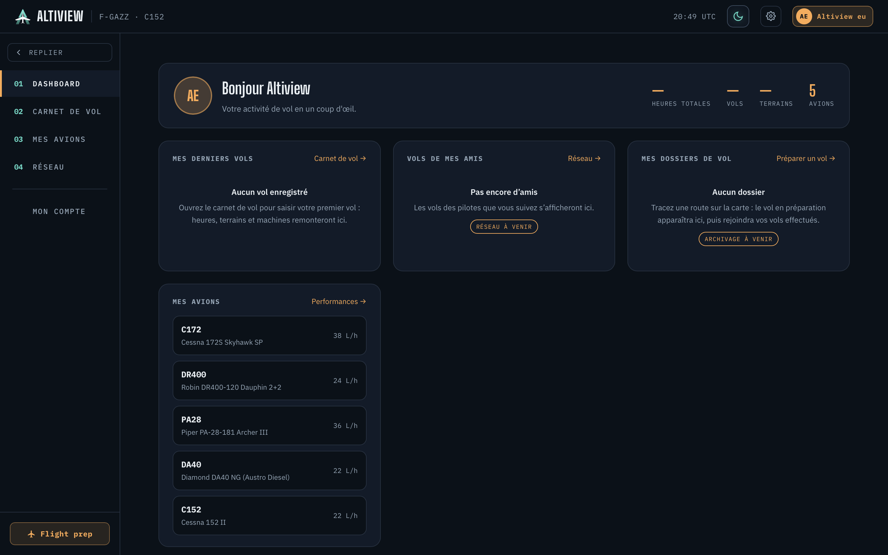
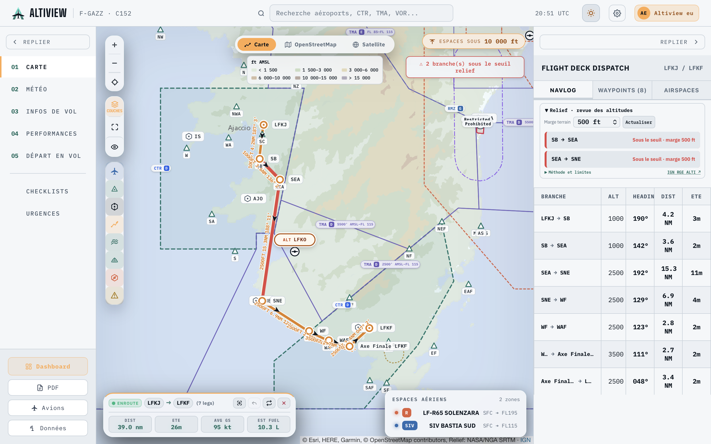
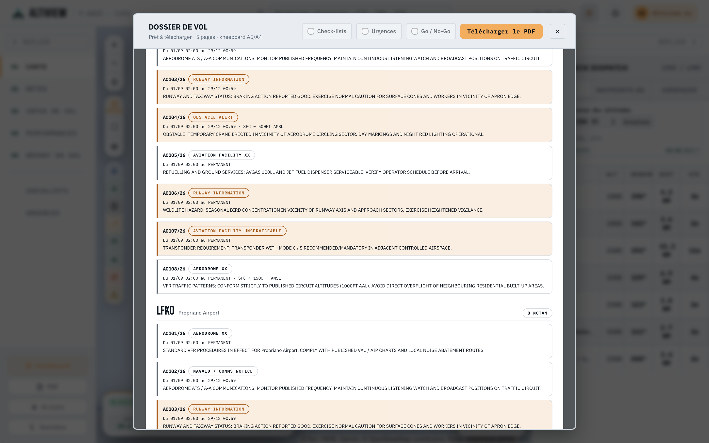

AltiView — Modernizing VFR Flight Preparation
I have been a light aircraft pilot for around five years, holding a Light Aircraft Pilot Licence (LAPL) with ~110 flight hours logged mostly in Piper and Cessna aircraft across Southern France and Corsica. Together with a close friend, we started building AltiView to rethink how general aviation pilots prepare, review, and brief their flights.

Preparing a VFR flight today remains surprisingly fragmented. Before stepping inside the cockpit, a pilot must synthesize operational data from several sources: aeronautical maps, METAR & TAF (weather), NOTAM bulletins, airfield VAC charts, fuel calculations, and separate weight & balance spreadsheets.
This issue leads to wasted time on repetitive arithmetic and, worse, increases the risk of missing something important (as I did sometimes, oops).
Core Idea: Centralize all required information to prepare a flight easily and safer, from flight planning to go/no-go checklists, going through weather review, flight information, aircraft performance...etc
AltiView is designed around the exact chronological order of a pilot's briefing routine:
Here is an early look inside the web application, built to be optimal readability in flight and pre-flight planning environments:


The final objective is to get a generated flight file to use either in PDF or to be printed, with all information required (weather, navlog, NOTAMs, briefing, checklists...) and get rid of other useless and non-intuitive files.
Are you an active VFR pilot or flight instructor?
AltiView is nearing its initial launch. We are actively running pilot interviews and private beta testing with general aviation pilots to validate the navigation log ergonomics, performance charts, and calculations.